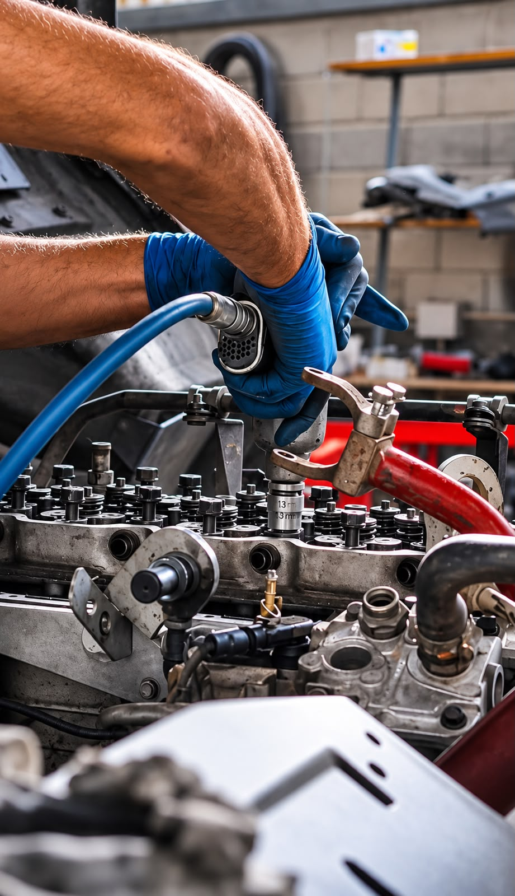
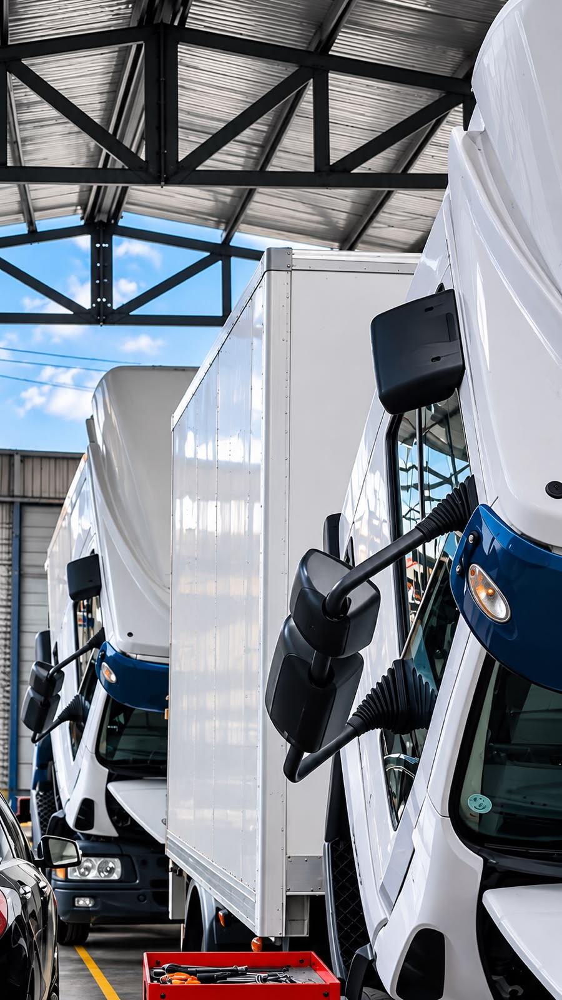

Meccanica generale
Controlli, riparazioni e assistenza meccanica su diverse tipologie di veicolo.
Schipani Auto è un punto di riferimento a Foresta di Petilia Policastro per manutenzione, diagnosi elettronica, assistenza tecnica e supporto su auto, veicoli commerciali e mezzi industriali.

Servizi dedicati a privati, professionisti e attività che lavorano con veicoli commerciali e industriali.
Controlli, riparazioni e assistenza meccanica su diverse tipologie di veicolo.
Interventi periodici per mantenere il mezzo efficiente e affidabile nel tempo.
Ricerca guasti e verifica delle anomalie attraverso strumenti dedicati.
Controlli e assistenza per l'impianto aria condizionata e climatizzazione.
Supporto tecnico per aziende, professionisti e mezzi utilizzati ogni giorno.
Assistenza dedicata ai mezzi commerciali e industriali, anche per esigenze specifiche.
Schipani Auto opera dal 1982 a Foresta di Petilia Policastro. L'attività unisce esperienza tecnica, attenzione al cliente e capacità di seguire interventi su auto, mezzi commerciali e veicoli industriali.

Una selezione di immagini che mostrano ambiente, strumenti e tipologie di mezzi seguiti in officina.


Schipani Auto segue le richieste di trasformazione in macchina operatrice, con il supporto di partner esterni specializzati nelle fasi necessarie. Ogni pratica richiede una valutazione tecnica e documentale del singolo mezzo.
Verifica il tuo autocarro →Invia i dati del tuo veicolo e richiedi una prima valutazione rapida tramite modulo e WhatsApp.
Richiedi informazioni →Per assistenza, appuntamenti o informazioni sull'officina e sulla targa gialla, puoi contattare Schipani Auto direttamente.